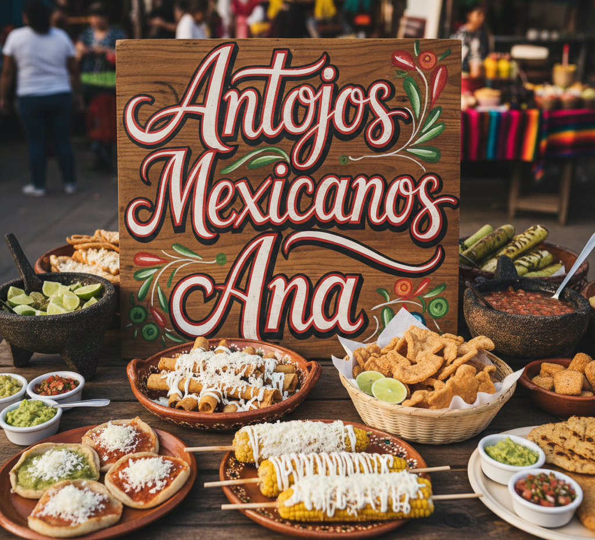
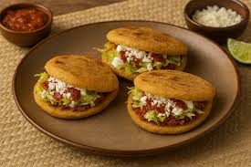
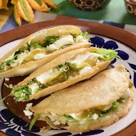
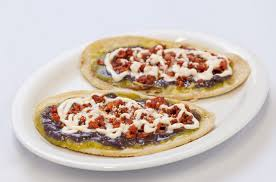
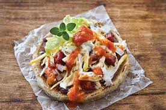

Gorditas, quesadillas, huaraches y sopes preparados con la receta tradicional de la abuela. Hechos con ingredientes frescos.
Ver Menú Completo Ordenar Ahora
Todo comenzó hace más de 20 años en la puerta de nuestro hogar. Con un pequeño comal y el sazón único de sus manos, Doña Ana decidió compartir con los vecinos los antojitos que siempre fueron el orgullo de su familia.
Lo que empezó como un puesto fuera de su casa, se convirtió rápidamente en una tradición del barrio. A pesar de los años, la esencia no ha cambiado: el aroma de las salsas recién hechas y el sonido de las tortillas palmeadas siguen recibiendo a todo aquel que busca el auténtico sabor de México.
Hoy, Doña Ana sigue al frente de la cocina, asegurándose de que cada pedido lleve el mismo cariño y calidad que el primer día. Nuestra misión es simple: que al probar nuestros antojos, te sientas tan bienvenido como si estuvieras sentado en el comedor de nuestra propia casa.
VisítanosBlvd. del Lago 154, Fraccionamiento Las Americas, 55883 Tepexpan, Méx.
Jueves: 9:00 am - 5:00 pm
Sábados: 9:00 am - 4:00 pm
Domingos: 9:00 am - 4:00 pm
Revisa nuestro menú y selecciona tus gorditas, quesadillas, huaraches o sopes favoritos. Elige tus guisos preferidos.
Llámanos directamente o escríbenos por WhatsApp para confirmar tu pedido, dirección y forma de pago.
Preparamos tu pedido con ingredientes frescos y te lo llevamos a domicilio. También puedes recoger en nuestro local.



